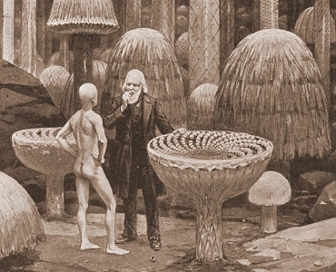

Sacred Texts
Earth Mysteries
Buy this Book at Amazon.com
|

|
ETIDORHPA
by John Uri Lloyd
[1897]
|
Contents
Start Reading
Page Index
Text (Zipped)
Take a Victorian scifi premise, say, a trip to the center of the earth,
and by the way, it's hollow.
Add a tale of a soul condemned by the Illuminati to a perilous underground
quest to find the Goddess of Love (spoiler alert: spell Aphrodite backwards).
Top it off with a wild magic mushroom trip.
That's Etidorhpa!
This may be the very source of the 'adepts living in hollow
earth who abduct humans' meme, later developed by
Ray Palmer, and many others.
The book is larded with long passages of speculative science.
The structure of the hollow earth and the effects of gravitation at
various places is much better worked out than some of the 'nonfiction'
hollow earth books (e.g. Reed
or Gardner).
The journey of 'I-am-the-man' is a not-so-subtle allegory
of spiritual progression to being a disembodied adept.
Along the way he loses his youth, loses sunlight, becomes weightless,
stops breathing, can hear without ears,
then his heart stops, ... and still he lives.
Each of this steps is symbolic of a progression to a more ethereal plane
of existence.
At times, the narrative recursion is three levels deep.
This is an acquired taste.
L. Sprague de Camp called Etidorpha 'unreadable.'
Modern readers accustomed to consuming multiple narrative streams
at the same time (i.e. channel hopping),
with long recursive breaks (i.e. commercials) might do better.
Except for the titular Etidorhpa, there are no female characters.
And she only appears briefly in a hallucination.
Why such a small part in the book?
Other genre novels, such as Atlantida
and The Lost Continent, are
driven by strong female characters.
And once the main character is inside the hollow earth, it just halts.
He doesn't even get to meet Etidorhpa again.
Whether the author ran out of steam, or the ending was only supposed
to be implied, is unknown.
--J.B. Hare, Dec. 2, 2007.
Title Page
Ascription
Preface
Preface to This Edition
A Valuable and Unique Library
Contents
Illustrations
Prologue
Chapter I. “Never Less Alone Than When Alone.”
Chapter II. A Friendly Conference
Chapter III. A Second Interview With the Mysterious Visitor
Chapter IV. A Search For Knowledge.—The Alchemistic Letter
Chapter V. The Writing of My Confession
Chapter VI. Kidnapped
Chapter VIII. A Wild Night.—I Am Prematurely Aged
Chapter VIII. A Lesson In Mind Study
Chapter IX. I Can Not Establish My Identity
Chapter X. My Journey Towards the End of Earth Begins.—The Adepts’ Brotherhood
Chapter XI. My Journey Continues.—Instinct
Chapter XII. A Cavern Discovered.—Biswell's Hill
Chapter XIII. The Punch-Bowls and Caverns of Kentucky.—“Into the Unknown Country.”
Chapter XIV. Farewell To God's Sunshine.—The Echo of the Cry
Chapter XV. A Zone of Light Deep Within the Earth
Chapter XVI. Vitalized Darkness.—The Narrows In Science
Chapter XVII. The Fungus Forest.—Enchantment
Chapter XVIII. The Food of Man
Chapter XIX. The Cry From a Distance.—I Rebel Against Continuing the Journey
Chapter XX. My Unbidden Guest Proves His Statement and Refutes My Philosophy
Chapter XXI. My Weight Disappearing
Chapter XXII. My Unbidden Guest Departs
Chapter XXIII. I Question Scientific Men.—Aristotle's Ether
Chapter XXIV. The Soliloquy of Prof. Daniel Vaughn on Gravitation
Chapter XXV. The Mother of a Volcano.—“You Can Not Disprove, and You Dare Not Admit.”
Chapter XXVI. Motion From Inherent Energy.—“Lead Me Deeper Into This Expanding Study.”
Chapter XXVII. Sleep, Dreams, Nightmare.—“Strangle the Life From My Body.”
Chapter XXVIII. A Challenge.—My Unbidden Guest Accepts It
Chapter XXIX. Beware of Biology, the Science of the Life of Man
Chapter XXX. Looking Backward.—The Living Brain
Chapter XXXI. A Lesson On Volcanoes.—Primary Colors Are Capable of Farther Subdivision
Chapter XXXII. Matter Is Retarded Motion
Chapter XXXIII. “A Study of Science Is a Study of God.”—Communing With Angels
Chapter XXXIV. I Cease to Breathe, and Yet Live
Chapter XXXV. “A Certain Point Within A Sphere.”—Men Are As Parasites On the Roof of Earth.
Chapter XXXVI. Drunkenness.—The Drinks of Man
Chapter XXXVII. The Drunkard's Voice
Chapter XXXVIII. The Drunkards’ Den
Chapter XXXIX. Among the Drunkards
Chapter XL. Further Temptation.—Etidorhpa
Chapter XLI. Misery
Chapter XLII. Eternity Without Time
Chapter XLIII. The Last Contest
Chapter XLIV. The Fathomless Abyss.—The Edge of the Earth Shell
Chapter XLV. My Heart Throb Is Stilled, and Yet I Live
Chapter XLVI. The Inner Circle, or the End of Gravitation.—In the Bottomless Gulf
Chapter XLVII. Hearing Without Ears.—“What Will Be The End?”
Chapter XLVIII. Why and How.—“The Struggling Ray of Light From Those Farthermost Outreaches.”
Chapter XLIX. Oscillating Through Space.—Earth's Shell Above Me
Chapter L. My Weight Annihilated.—“Tell Me,” I Cried In Alarm, “Is This To Be a Living Tomb?”
Chapter LI. Is That a Mortal?—“The End of Earth.”
Chapter LII. The Last Farewell
Epilogue. Letter Accompanying the Mysterious Manuscript
The Life of Prof. Daniel Vaughn
To the Recipients of the Author's Edition of Etidorhpa
Reviews of Etidorhpa